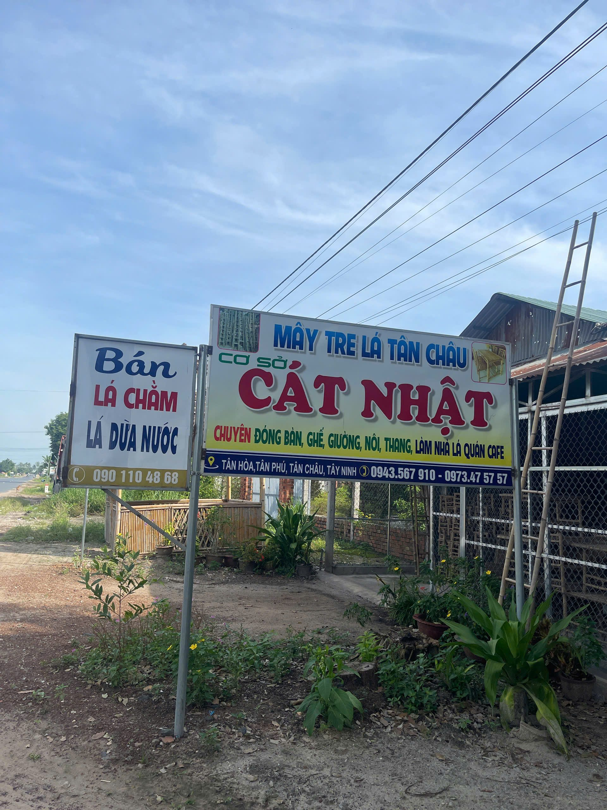

XƯỞNG TRE CÁT NHẬT
Cùng bắt đầu
từ một cuộc gọi.
Trao đổi mẫu mã, kích thước, số lượng hoặc ý tưởng công trình cùng xưởng.
THÔNG TIN LIÊN HỆ
Xưởng ở Tân Châu,
Tây Ninh.
Liên hệ trực tiếp để hỏi tình trạng sản phẩm, quy cách tre cây hoặc trao đổi yêu cầu thi công.
GỌI XƯỞNG0973 475 757↗ NHẮN ZALO0943 567 910↗ FACEBOOKXưởng Tre Cát Nhật↗Tân Hòa, Tân Phú, Tân Châu, Tây Ninh
Đang cần sản phẩm hay muốn làm công trình?
Xem sản phẩm ↗Xem dịch vụ thi công ↗